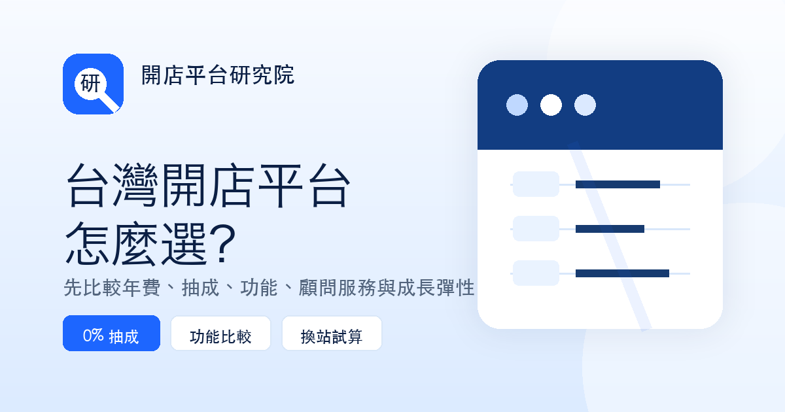

AI 電商與 SEO
AI 寫電商文章會影響 SEO 嗎？品牌官網的內容流程與審稿清單
AI 可以縮短研究、整理與初稿時間，但它不會替品牌建立可信度。真正影響內容價值的，是有沒有正確資料、真實經驗、清楚的判斷條件與人工審核。

快速結論：使用 AI 本身不會讓文章失去搜尋可見度；問題出在內容是否只是大量改寫、沒有新增價值，或包含未核對的資料。最穩的做法是把 AI 當成研究與初稿助手，並由品牌團隊補上事實、案例、限制與最後判斷。
先回答：AI 寫文章會傷 SEO 嗎？
不會因為「用了 AI」就被判定為低品質。Google 的公開說明重點一直是內容是否對人有幫助、可靠且具原創性；生成式 AI 可以用於研究與整理，但若大量產出幾乎沒有投入、原創觀點或附加價值的頁面，可能落入大量產製低價值內容的風險。
對電商品牌來說，這個差異很實際。AI 可以幫你列出「平台比較要看哪些項目」，但不應替你決定某個競品的最新費用、功能或適合對象。這些資訊需要回到官方頁、合約或實際導入經驗核對，並清楚寫出資料日期與適用範圍。
什麼是有新增價值的品牌內容？
| 容易變得空泛的寫法 | 品牌可以補上的新增價值 |
|---|---|
| 列一長串平台功能 | 說明哪一種營收、門市或人力情境會真的需要該功能 |
| 直接下結論推薦某個方案 | 交代比較條件、資料來源與哪些情況不適合 |
| 把其他網站換句話說 | 加入導入流程、常見卡關點與可執行的檢查清單 |
| 只追熱門關鍵字 | 回答客戶在下單前、換站前真正會追問的問題 |
內容不需要假裝「完全不使用 AI」。讀者真正介意的是資訊是否可靠、是否有誤導性的承諾，以及讀完能不能做出下一步判斷。把自己的資料、案例和限制說清楚，會比堆更多形容詞有用得多。
品牌官網可採用的 AI 內容工作流程
1. 用 AI 協助盤點問題，而不是直接指定篇數
先整理客服、業務、門市與顧問最常收到的問題，例如「開店平台抽成怎麼算」、「換站會不會影響 SEO」、「POS 和餐飲 POS 有什麼差異」。這些問題通常比泛泛的熱門題目更接近實際商業需求。
2. 先建立可核對的資料底稿
方案價格、抽成、試用期、串接範圍等會變動的資訊，先記錄來源網址、查核日期與限制。若資料並非公開可得，文章應改寫成評估方法，例如「請確認是否依方案開放」，而不是補上一個看似精確的答案。
3. 再用 AI 做架構、初稿與讀者追問
這是 AI 特別適合的地方：協助排列 H2、找出遺漏問題、把專業說明轉為更好理解的文字。但最終要由熟悉業務的人補上情境、確認事實並刪除沒根據的句子。
4. 發布後根據 Search Console 回頭修
文章上線並不是結束。看哪些查詢開始出現、哪些頁面曝光有但點擊低，再優化標題、摘要、FAQ 或內部連結。內容更新要有實質變化，而不是只修改日期。
發布前的 10 分鐘審稿清單
- 標題是否明確說出讀者要解決的問題，而不是只塞關鍵字？
- 涉及費用、功能、政策或比較的內容，是否有來源與查核日期？
- 有沒有一段是來自品牌實務、案例條件或可執行流程？
- 是否清楚說明限制，例如方案、合約或產業不同可能造成差異？
- H1、meta description、canonical、OG 圖與文章結構化資料是否一致？
- FAQ 是否真的回答下一個問題，而不是重複正文？
- 是否放了 2 至 3 個能帶讀者往下一步的延伸閱讀？
值得保留的原則：AI 可以讓內容團隊更快，但不能替你承擔資料正確性與品牌立場。只要涉及價格、功能、合約或比較結論，發布前都應人工覆核。
電商品牌使用 AI 寫內容時，最常見的 4 個錯誤
- 一次發布大量相似文章：同一個關鍵字換標題，沒有新的問題或案例，讀者與搜尋系統都很難從中得到新資訊。
- 把過期的費用當成最新答案：競品方案變動快，應寫明資料日期並連回官方頁，避免用未確認的數字做強烈結論。
- 忽略內部連結：平台比較、費用試算、換站與內容策略需要互相連結，才能讓讀者一路找到下一步。
- 只追求篇數，不追求更新：先把已有曝光的文章補強、更新與擴寫，通常比新增十篇薄內容更有效率。
常見問題
文章有用 AI 協助，需要特別標註嗎？
是否標註可依品牌政策決定。更重要的是內容正確、具新增價值，並由對內容負責的人完成審核。若內容涉及專業、價格或承諾，建議公開寫出來源與更新日期。
AI 寫出的內容可以直接上線嗎？
不建議。至少應檢查事實、數字、競品資訊、連結、重複段落與品牌語氣；必要時加入公司實務、案例條件或限制說明。
一篇文章要多長才對 SEO 有幫助？
沒有固定字數。重點是內容是否完整回答主題。能清楚回答問題、給出判斷條件與下一步的文章，比為了湊字數而延長更有價值。
AI 內容會不會影響品牌可信度？
會影響可信度的通常是錯誤、空泛或過度承諾，而不是工具本身。加入人工查核、引用資料、作者或品牌觀點，能讓讀者知道這篇內容經過負責任的整理。
電商品牌最值得先寫哪些 AI 相關文章？
先從客戶常問、且會影響決策的題目開始，例如 AI 客服能做什麼、AI 商品文案怎麼審核、AI 搜尋如何影響品牌內容，以及如何用 AI 整理會員與商品資料。